24/7 emergency car recovery (ريكفري سيارات طوارئ 24/7)
Stuck on the road at night or in the early hours? Call anytime and we dispatch a flatbed to you.
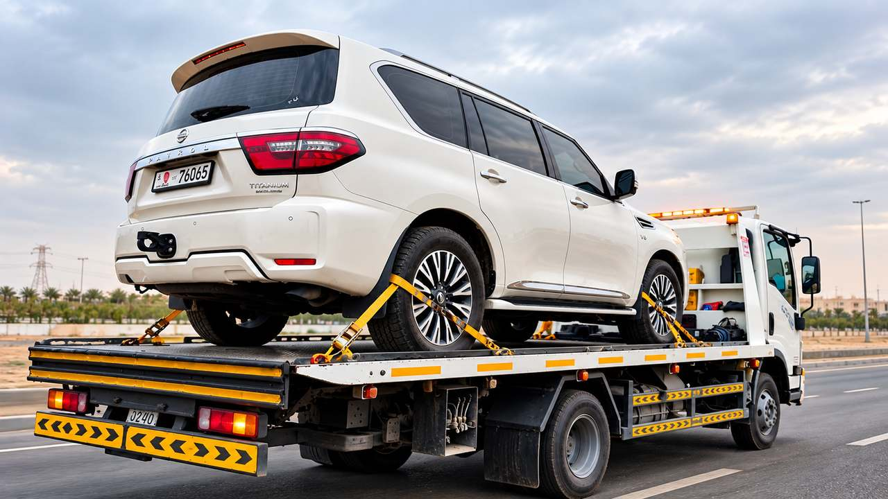
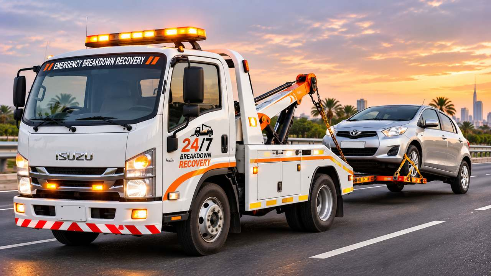
Stranded on a Sharjah road at any hour? Call us and a flatbed comes to your location.
Car will not start or has lost power? We recover it and take you and your vehicle home safely.
Vehicle damaged in a collision? We load it carefully and deliver it to your garage or insurer-approved workshop.
Worried about moving a high-value car? Careful flatbed handling protects it all the way to its destination.
Stuck in sand or mud? Our winch-equipped recovery pulls you out and gets you back on firm ground.
Fast Recovery Services is a Sharjah-based vehicle recovery and roadside assistance company. When a car breaks down, has an accident or will not start, we send a flatbed to your location and deliver the vehicle safely to the address you choose.
We cover every area of Sharjah around the clock and arrange recovery to other emirates on request. One call or WhatsApp message is all it takes to get started.
خدمة ريكفري وسحب سيارات في الشارقة على مدار الساعة.
From emergency recovery to specialist transport, tell us what happened and we send the right equipment the first time.
Stuck on the road at night or in the early hours? Call anytime and we dispatch a flatbed to you.
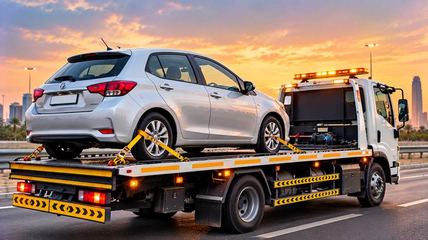
Car cannot be driven? We tow it safely from where it stopped to your chosen address.
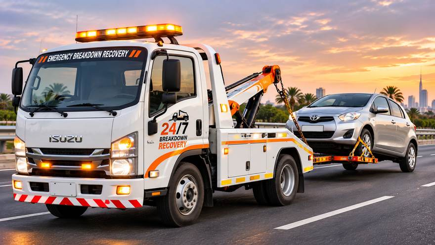
Engine trouble or a car that will not start? We recover it and get you and your vehicle home safely.
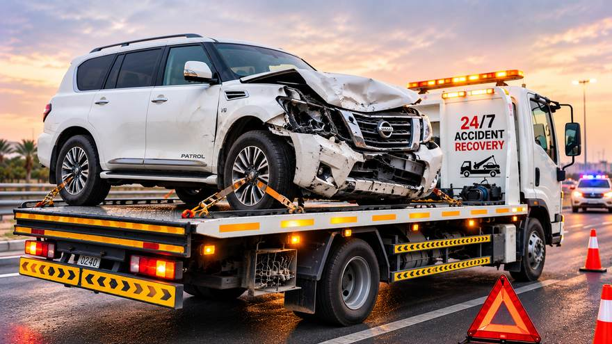
Car damaged in a collision? We load it carefully and deliver it to your garage or insurer-approved workshop.
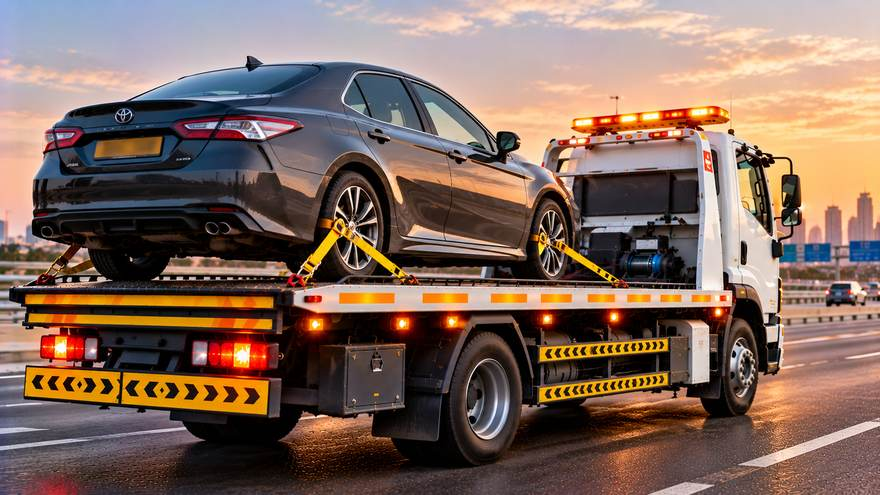
Worried about damage from dragging wheels? Flatbed transport keeps all four wheels off the road.
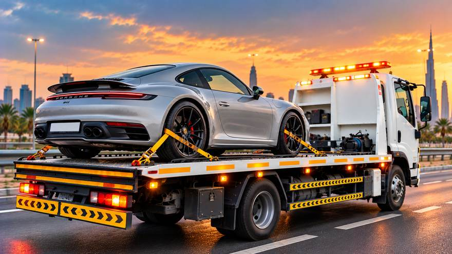
Concerned about moving a high-value car? Careful flatbed handling protects it all the way to its destination.
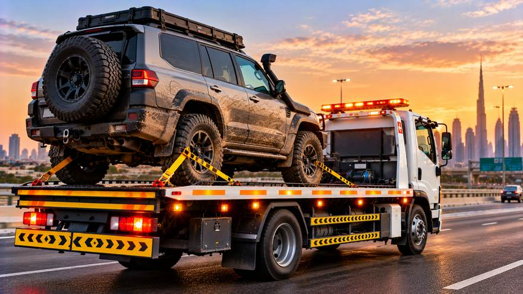
SUV or 4x4 too heavy for a standard tow? We send equipment sized correctly for it.
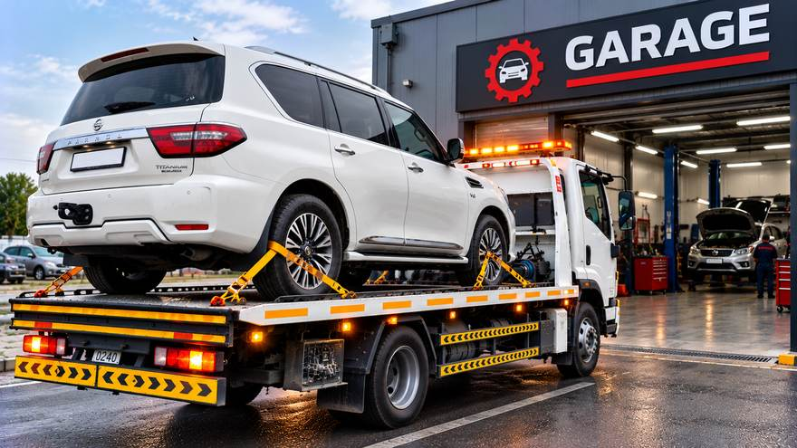
Car needs repair but cannot be driven there? We take it straight to your trusted garage or workshop.
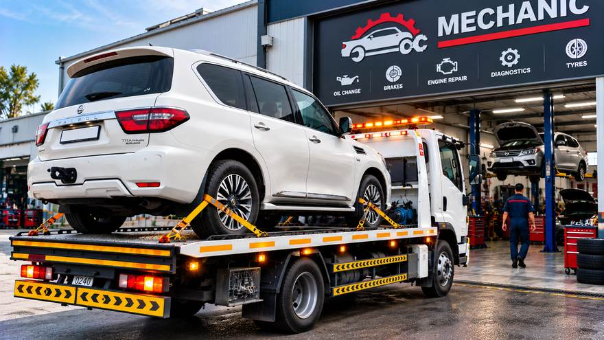
Want your own mechanic to look at it? We deliver your vehicle to the mechanic of your choice.
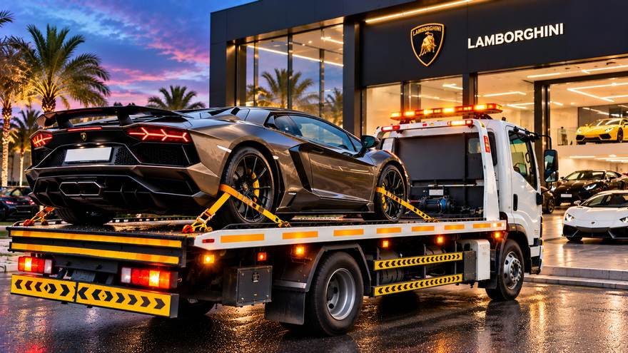
Warranty or service work at the dealership? We transport your vehicle there safely.
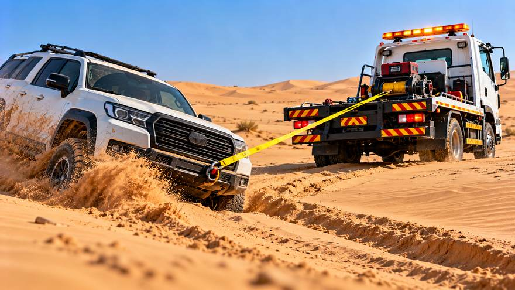
Stuck in sand, mud or rough terrain? Our winch-equipped recovery pulls your vehicle back to firm ground.
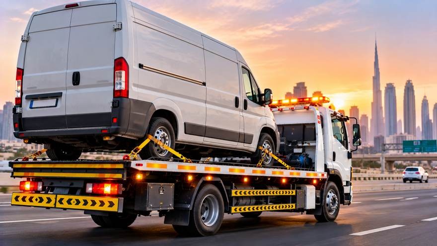
Van or fleet vehicle off the road and costing you time? We tow it so your business can get moving again.
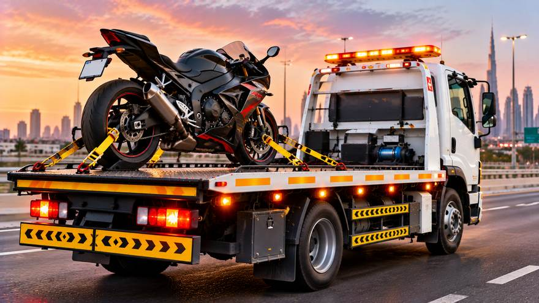
Bike will not start or is damaged? We strap it securely on a flatbed and take it where it needs to go.
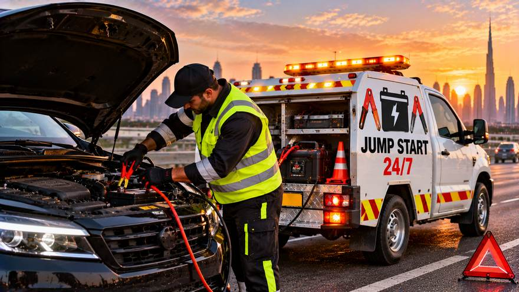
Dead battery in a car park or at home? We jump start your car on the spot so you can drive off.
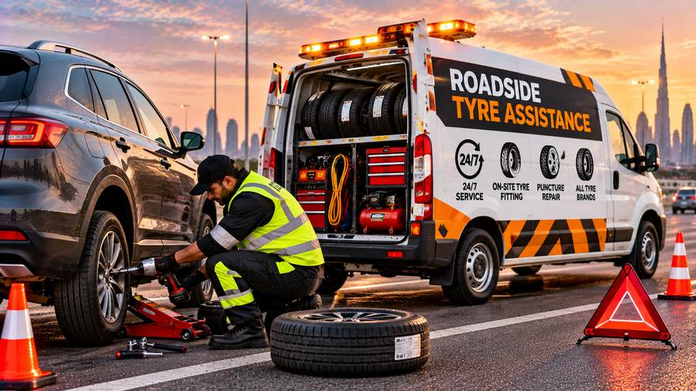
Stuck with a flat or damaged tyre? We get you moving again at the roadside.
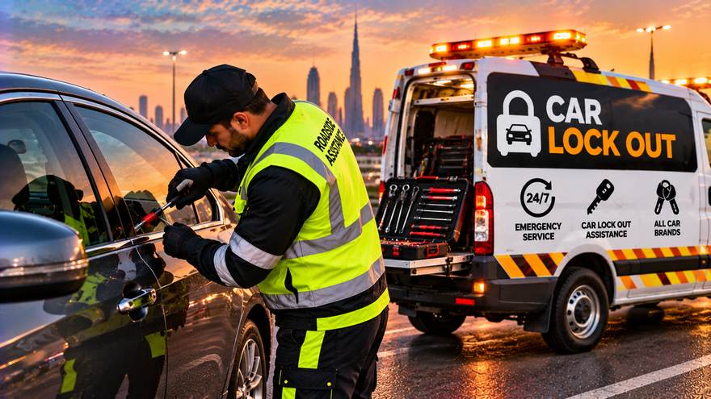
Keys locked inside your vehicle? We help you get back in without damage.
Describe what happened and we will tell you the right truck and the next step.
We cover all the Sharjah areas below. Need a vehicle moved to another emirate? Tell us your pick-up point and destination and we arrange nationwide recovery on request.
ريكفري الشارقة | سحب سيارات الشارقة | إنقاذ سيارات الشارقة | ونش الشارقة | سطحة الشارقة
نخدم جميع مناطق الشارقة: المجاز، الخان، التعاون، النهدة، القصباء، القاسمية، أبو شغارة، الرولة، اليرموك، النبعة، الغوير، البطينة، المريجة، الشويهين، الفشت، الحيرة، الجزات، الفيحاء، الرملة، مويلح، الجادة، المدينة الجامعية، الرحمانية، السيوح، النوف، القرائن، والمناطق الصناعية.
Three steps from your first call to a safe drop-off.
Share your location, vehicle type and where it needs to go.
Our driver heads to you and confirms the pick-up details.
Your vehicle is strapped on the flatbed and delivered to your chosen address.
Simple service, clear communication and careful handling.
Breakdowns do not follow office hours, so neither do we.
All four wheels stay off the road, protecting your gearbox and tyres.
We know Sharjah roads, parking areas and the fastest routes to workshops.
One phone number, one WhatsApp chat and a quote before we move.
Yes. Whether you search for car recovery, ريكفري الشارقة, سحب سيارات الشارقة or إنقاذ السيارات, Fast Recovery Services sends a flatbed to you 24 hours a day.
Yes. Fast Recovery Services takes calls and WhatsApp messages all day and night, every day of the week.
All areas of Sharjah, plus transport to Dubai, Ajman, Abu Dhabi, Ras Al Khaimah and the rest of the UAE.
Cars, SUVs and 4x4s, luxury and sports cars, vans, commercial vehicles and motorcycles. We also handle off-road winching. Tell us the make and model when you call so we send the right truck.
Call or send your pick-up point, destination and vehicle details on WhatsApp. We confirm the price before the truck moves.
Yes. Our lockout service helps you regain access to your vehicle. Call us with your location and car model.
Call for the fastest response, or send your details by WhatsApp and we reply with a quote.
058 155 4433Phone and WhatsApp, open 24/7